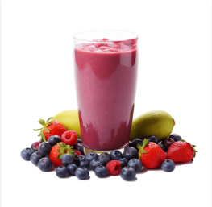

שייק שלחיים
שייק בריא ומרענן, מושלם
להתחלת
היום.
מלא בוויטמינים וטעם נפלא שיעשה לכם יום מתוק!


שייק בריא ומרענן, מושלם
להתחלת
היום.
מלא בוויטמינים וטעם נפלא שיעשה לכם יום מתוק!

המתכון הנהדר הזה הגיע בהשראת ספר המתכונים הים-תיכוני 'בישול בריא בבית' , שמתמחה בשייקים טבעיים ומשקאות בריאות קלים להכנה.
זה השייק המושלם לפתוח איתו את הבוקר כשאין הרבה זמן, או לפנק את המשפחה ביום קיץ חם כשרעננות טעימה היא בדיוק מה שצריך.
| שלב | פעולה | זמן בדקות |
|---|---|---|
| 1 | שוטפים היטב את כל הפירות | 5 |
| 2 | חותכים את הפירות לקוביות קטנות | |
| 3 | מכניסים את הפירות החתוכים לתוך הבלנדר | 2 |
| 4 | מוסיפים כוס מים, חלב או מיץ לפי הטעם | 1 |
| סך הכל זמן הכנה פעיל | 8 | |
| דרגת קושי: קלה | ||